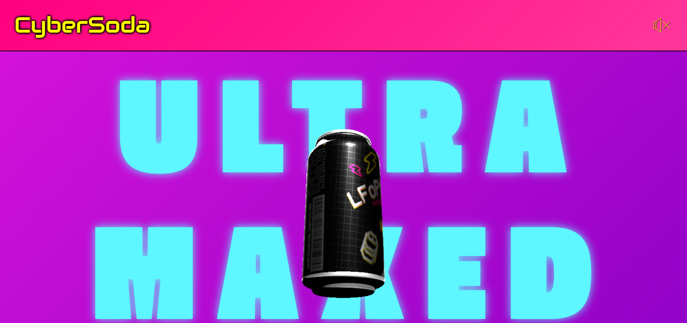
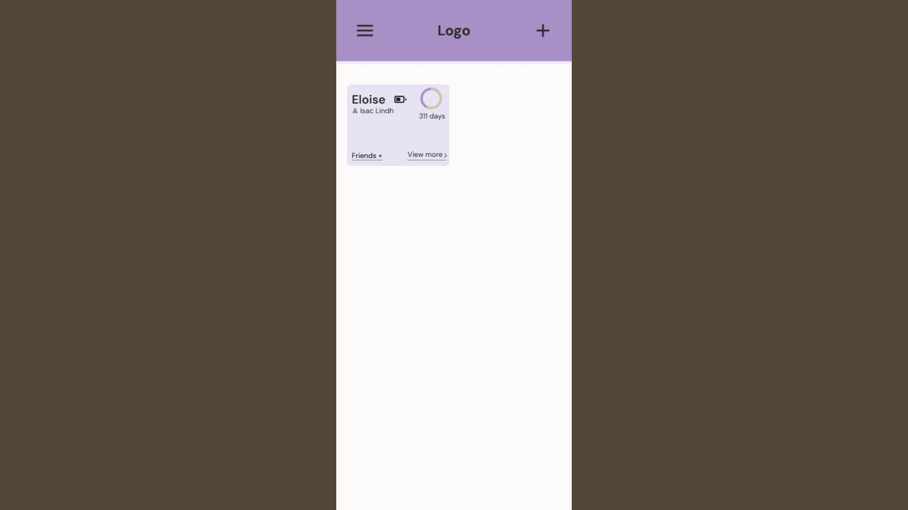

Hello!
I'm Isac - Web Developer and UX Designer, driven by creativity and curiosity.

I'm Isac - Web Developer and UX Designer, driven by creativity and curiosity.
HTML
CSS
JAVASCRIPT
PHP
SQL
PYTHON
HTML
CSS
JAVASCRIPT
PHP
SQL
PYTHON
Music producer & multi-instrumentalist
Theatre actor
Skater
Plant caretaker
Yoga & calisthenics enthusiast
Lifelong learner
I'm a web developer and UX designer with a bachelor's degree in cognitive science. I combine technical skills with a user-centered mindset to create websites and digital products that are (hopefully) intuitive and enjoyable to use.
At heart, I'm a creative. Outside of work I produce music, act in theatre and place a high value on aesthetics. I'm also a people person and together, these traits form the foundation of my workflow.
Designing and building user-centered products is, to me, a fun and rewarding problem-solving activity. It's where empathy meets creativity.
Yearly conference for Cognitive Science enthusiasts. Written in the Astro framework, using tailwind CSS.

A dynamic web application for managing NFL teams and players. Developed with HTML and PHP, using a relational database schema in MySQL. Deployed on Railway.

A dynamic 3D web application built with vanilla JavaScript and powered by the THREE.js library for rendering. The app utilizes Vite for efficient bundling. As the user scrolls, an Audiocontext is triggered to manipulate a BiquadFilter, creating an immersive, audio experience that responds to user interaction.
A user-centered design project focused on improving how breeders track foaling and gestation. Through user research and wireframing, the project culminated in a mobile-friendly figma prototype. That acts as a proof of concept aimed at simplifying the management of gestation milestones and receiving foaling alerts.
A UX design project aimed at improving the usability and visual clarity of an existing website. The process included evaluation of existing design principles, wireframing, and interface redesign. The process was carried out using Figma.

A UX design project aimed at improving the usability and visual clarity of an existing website. The process included evaluation of existing design principles, wireframing, and interface redesign. The process was carried out using Figma.

A UX design project aimed at improving the usability and visual clarity of an existing website. The process included evaluation of existing design principles, wireframing, and interface redesign. The process was carried out using Figma.